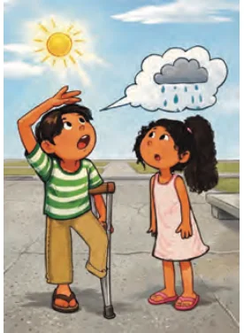
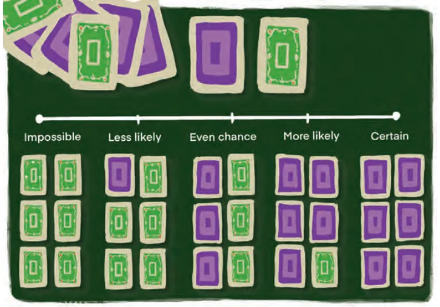
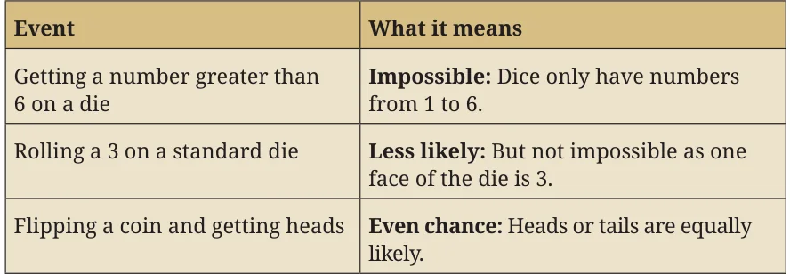
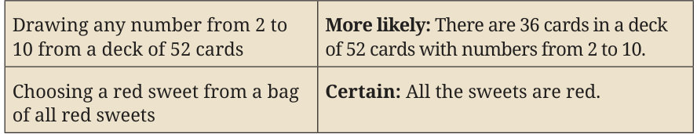

Probability is a type of measurement, similar to how we measure quantities like length, area, or volume. However, instead of measuring physical quantities, probability is used to measure the likelihood of events. Specifically, it helps us express how confident or certain we are that a particular event will occur. For example, you may ask your friend:
- •Is it going to rain today?

- •Will our school win the inter-school
hockey match tomorrow?
- •Will I be chosen in the monthly lucky
draw to perform at the school assembly? [The names of all the students in school are written on slips of paper and one slip is randomly selected.] These events are examples of random events. We know the possible outcomes (either it will rain today or it will not; our school team will either win, draw or lose the hockey match; one student will be chosen to perform at the school assembly), but we do not know in advance which one will definitely occur. That is, there is an element of chance or randomness involved every time such an event takes place. Can we predict these outcomes with 100% certainty? One could respond to these questions with words such as impossible or certain, or using phrases such as less likely, more likely or equally likely. This decision is based on different kinds of evidence that have been gathered. For example, one friend might say, “The sun is shining brightly, so it’s unlikely to rain today”, while another might observe, “It’s very hot, which makes me think it could rain later”. In both cases, they are predicting rainfall based on how they interpret the present weather conditions. This is the subjective probability given to the event of today’s rainfall.
As you can see from the above example, probability deals with uncertainty or chance. One key feature of our increasingly complicated society is that we must deal with questions that have no fixed answer but rather one or more possibilities for the answer. Thus, understanding how to objectively estimate the probability of events is crucial in many aspects of life. In this chapter, we will learn how we can measure probability more objectively, i.e., the ways of collecting evidence that can be used for an objective estimate of likelihood. But first, we must understand a few terms and ideas such as randomness and the probability scale.
7.1.1 What is Randomness?
Randomness refers to a situation or action (like the tossing of a coin or the rolling of a die) where you cannot predict exactly what will happen. Although you may know all the possible outcomes, you cannot say which one will definitely occur. For example,
- •Tossing a coin: You know it could be heads or tails, but you
cannot be sure which one will come up in a single toss.
- •Rolling a die: You know the possible outcomes are 1, 2, 3, 4, 5, or 6,
but you do not know which number will appear on a particular roll. These observations (commonly called experiments or trials in probability) are called random because of their unpredictability. The lucky draw example mentioned earlier is an example of a random observation or experiment, as the outcome cannot be predicted in advance, and each student has an equal chance of being selected. All you can say is what could happen, not what will happen. Random Observations: A random experiment is something you can repeat (like tossing a coin), where every time you do it, the result might be different and you cannot know the outcome in advance.
Think and Reflect
Such unpredictability can be useful sometimes! For example, in a cricket match, the fact that a coin is tossed to decide which team will bat first is considered to be a fair method. Can you explain why?
Probability is the area of mathematics that studies randomness and how likely a specific outcome is to happen in a random situation. For example, when you toss a coin, the probability for heads is \(\frac{1}{2}\) , and
for tails is \(\frac{1}{2}\) , because each is equally likely. In a random experiment, every outcome has a chance to occur, but you can only determine the likelihood, not the exact result.
Have you wondered what makes an event like rain random?
An event like rain is considered random because it depends on many complex factors in the atmosphere (such as temperature, humidity, wind patterns, and pressure) and is so sensitive to these factors that it is impossible to predict it with total certainty. Thus, it is impossible to know with absolute certainty whether it will rain on a specific day. Randomness in rain means that while the exact timing and location of rainfall cannot be predicted perfectly, we can estimate the likelihood or probability of rain in different locations based on patterns and probabilities derived from data.
Think and Reflect
Ask your friend to predict the outcome of a ` 1 coin you toss. Do you see that your friend could guess heads or tails but could not know for certain? That’s randomness! All possible results are known, but each individual try is unpredictable.
7.1.2 The Probability Scale
Probability is measured on a scale from 0 to 1 to indicate the likelihood of the occurrence of an event. If the probability of your school winning the hockey match is 0.75, that means there is a 75% chance your school will win. This means that it is more likely than not that your school will win the match. If the probability of your school winning the hockey match is 0.5, that means there is a 50% chance your school will win. This means that it is equally likely that your school will win or lose the match. On the other hand, if the probability is 0, it would mean winning is impossible (for example, winning without playing), and if the probability is 1, it would mean your school is certain to win. The probabilities of most events fall somewhere strictly between 0 and 1, expressing how likely they are to happen. Imagine a deck of six cards where the number of purple and green cards is unknown. The probability of picking a purple card from the deck (see Fig. 7.1) can range from impossible (if there are
no purple cards) to certain (if all six are purple). As the number of purple cards increases, the likelihood of selecting a purple card moves smoothly along the probability scale from less likely, to even chance, to more likely. This scale helps us understand and compare how likely different events are, just like using a number line!

Here are a few examples of events and the probabilities of their occurrence. Look at the examples against the probability scale in Fig. 7.1 to understand how probability is measured on a scale.


- 1.Rank the following events on a scale from 0 (Impossible) to
1 (Certain). Label each event: Impossible, less likely, equally likely (even chance), more likely, certain. Give reasons why you gave each event its ranking.
- (i)The next Monday will come after Sunday.
- (ii)It will snow in Mumbai in July.
- (iii)An elephant will walk through your classroom today.
- (iv)You will greet at least one friend at school tomorrow.
7.2 Measuring Probability Objectively
There are two main ways of estimating the probability of an event objectively:
- 1.Using evidence from experience: This involves collecting
data either by performing an experiment multiple times or by analysing statistical data from past observations. In both cases, the probability is estimated by calculating the relative frequency of the event based on the collected evidence. We call this experimental probability.
- 2.Using theoretical methods: This approach assumes that all
possible outcomes are equally likely (when there is no reason to believe that any one outcome is more likely than another). The probability is then determined by reasoning about the number of favourable outcomes in relation to the total number of possible outcomes. We call this theoretical probability.